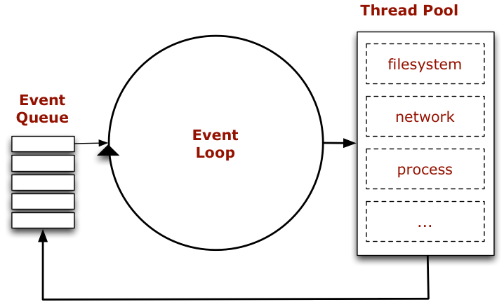

Hochschule Augsburg
Asynchrone & event-orientierte Entwicklung mit Node.js

Agenda
- Geschichte
- Architektur
- Konzepte
- Fazit
Geschichte
var http = require('http');
http.createServer(function (req, res) {
res.writeHead(200, {'Content-Type': 'text/plain'});
res.end('Hello World\n');
}).listen(1337, "127.0.0.1");
console.log('Server running at http://127.0.0.1:1337/');Node's goal is to provide an easy way to build scalable network programs (http://nodejs.org)
- wurde 2009 veröffentlicht von Ryan Dahl
- Aktueller Maintainer: Timothy J Fontaine
- basiert auf der V8-Engine von Google (Chrome)
- ist Open-Source unter der MIT Lizenz
- ist geschrieben in C++ und JavaScript
Architektur
V8
- JavaScript Engine von Google (Chrome)
- Open-Source unter einer BSD-Lizenz
- erstmals veröffentlicht 2008
- JavaScript/ECMAScript Runtime von Node.js
LibUV
libuv is a multi-platform support library with a focus on asynchronous I/O(https://github.com/joyent/node/tree/master/deps/uv)
Node.js Core-Library
bietet wichtige Funktionen die JavaScript nicht mit bringt. z.B. Dateisystem-Zugriff, Server-Komponenten (HTTP/UDP) aber auch allgemeine Utilities (EventEmitter)
teilweise implementiert in C(++) auf Basis von libuv um mit dem Betriebssystem zu kommunizieren.
Konzepte
Asnychron / Non-Blocking
// PHP
print("Hello");
sleep(5);
print("World");
print("Bye");
//=> Hello World Bye
// NODE
console.log("Hello");
setTimeout(function() {
console.log("World");
}, 5000);
console.log("Bye");
//=> Hello Bye World
Synchron
try {
names = fs.readFileSync("./names.json");
}
catch(err) {
//handle err
}
JSON.stringify(names);
Asynchron
fs.readFile("./names.json", function(err, names) {
if(err) {
//handle err
return;
}
JSON.stringify(names);
});Events
var http = require('http');
var server = http.createServer().listen(1337);
server.on("request", function(req, res) {
console.log("request received: ", req.url);
res.writeHead(200, {'Content-Type': 'text/plain'});
res.end('Hello World\n');
});Streams
server.on("request", function(req, res) {
var readableStream = fs.createReadStream("./names.json");
//HTTP res(ponse) = writeable stream
readableStream.pipe(res);
});server.on("request", function (req, res) {
var writeableStream = fs.createWriteStream(__dirname + "/data.log");
req.on("end", function () {
res.end("done");
});
//HTTP req(uest) = readable stream
req.pipe(writeableStream);
});Einsatzbereiche
Echtzeit-Anwendungen
- Websockets
- Events!
- Streams!
REST-APIs
- gute Performance bei hoher Request-Rate (IO)
- JavaScript & JSON = best friends
- Streams reduzieren Speicherbedarf
- Event-Orientierung bietet Flexibilität
Isomorphe Webanwendungen
- Code-Sharing zwischen Server & Browser
systemnahe Anwendungen
+ gute Betriebssystem-Integration
+ Streams!
- Automatisierung (Skripts)
- Command-Line-Tools